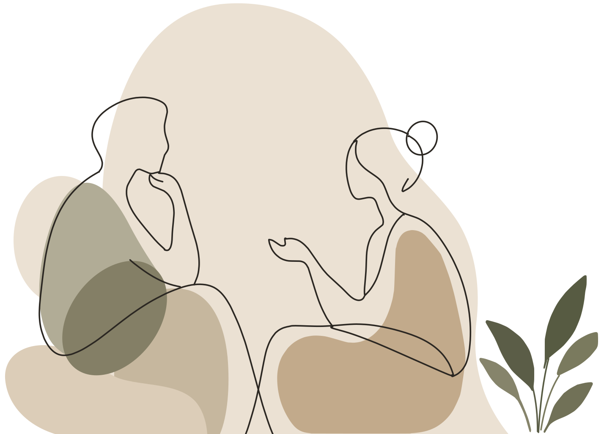

Savjetovanje i osobni razvoj
TAKT
Ponekad znamo da nešto želimo promijeniti, ali ne znamo odakle krenuti. Ponavljamo iste obrasce, teško postavljamo granice, previše razmišljamo o tome što drugi očekuju od nas ili osjećamo da smo se negdje putem udaljili od sebe.
TAKT je prostor za razgovor, razumijevanje i promjenu.
Petra Mačković, magistra socijalnog rada i polaznica psihoterapijskog pravca transakcijske analize

Kroz individualno savjetovanje zajedno istražujemo što ti se događa, što ti je potrebno i koje obrasce želiš mijenjati kako bi mogao/la donositi svjesnije odluke i graditi kvalitetniji odnos sa sobom i drugima.
-
Individualni pristup
Razgovor se prilagođava tebi – tvom tempu, tvojim pitanjima i onome što ti je u tom trenutku važno.
-
Online ili uživo
Susreti se održavaju online ili uživo, pa možeš odabrati način koji ti je ugodniji.
-
Siguran prostor za razgovor
Povjerljiv i prihvaćajući odnos u kojem možeš istraživati sebe bez osuđivanja.
Savjetovanje
Kada savjetovanje može biti za tebe?
Možda želiš bolje razumjeti sebe i svoje reakcije. Možda ti je teško postaviti granice ili reći ‘ne’ bez osjećaja krivnje. Možda se često prilagođavaš drugima, preuzimaš previše odgovornosti ili se iznova nalaziš u sličnim odnosima i situacijama.
Područja kojima se savjetovanje može baviti
- odnosi i komunikacija
- osobne granice
- samopouzdanje i odnos prema sebi
- razumijevanje vlastitih emocija i potreba
- životne promjene i važne odluke
- stres i izazovi svakodnevice
- obrasci koji se ponavljaju u odnosima
- osobni rast i razvoj
Ne moraš unaprijed znati točno definirati problem. Ponekad je sasvim dovoljno znati da želiš da nešto bude drugačije.
Javi se za prvi razgovorKako izgleda susret
Kako izgleda savjetovanje?
Susreti se održavaju online ili uživo, u unaprijed dogovorenom terminu.
Prvi razgovor služi tome da se upoznamo, razgovaramo o tome što te dovodi na savjetovanje i što bi želio/la postići. Ako odlučimo nastaviti suradnju, zajedno definiramo cilj našeg rada.
Savjetovanje nije mjesto na kojem ćeš dobivati gotove recepte kako trebaš živjeti. To je zajednički proces u kojem kroz razgovor, pitanja i istraživanje pokušavamo bolje razumjeti tvoje iskustvo i pronaći mogućnosti koje možda do sada nisi vidio/la.
O meni
O meni
Ja sam Petra Mačković, magistra socijalnog rada i polaznica psihoterapijskog pravca transakcijske analize.
Višegodišnje profesionalno iskustvo u području socijalnog rada omogućilo mi je susret s ljudima u vrlo različitim životnim okolnostima – u trenucima promjene, nesigurnosti, donošenja važnih odluka i traženja novih načina suočavanja sa životnim izazovima.
Dodatno se educiram u psihoterapijskom pravcu transakcijske analize, koji mi je posebno blizak zbog jasnog, razumljivog i humanističkog pogleda na čovjeka i njegove odnose.
U radu mi je važan odnos u kojem se osoba može osjećati prihvaćeno i dovoljno sigurno da istražuje sebe bez osuđivanja.
Zašto TAKT?
Takt znači osjećaj za drugoga – način na koji ulazimo u odnos, slušamo, govorimo i reagiramo.
Ponekad živimo u ritmu koji su za nas odredile obaveze, očekivanja ili davno usvojeni obrasci.
Savjetovanje može biti mjesto na kojem zastajemo i pitamo:
- Što ja želim?
- Što mi treba?
- Zašto uvijek reagiram na isti način?
- Mogu li ovaj put izabrati drugačije?
Kontakt
Prvi korak može biti samo razgovor.
Ne moraš imati sve odgovore prije nego što se javiš.
Ako razmišljaš o savjetovanju i želiš provjeriti odgovara li ti moj način rada, pošalji mi poruku.
- E-mail takt.savjetovanje@gmail.com
- Način rada online ili uživo, uz prethodni dogovor termina